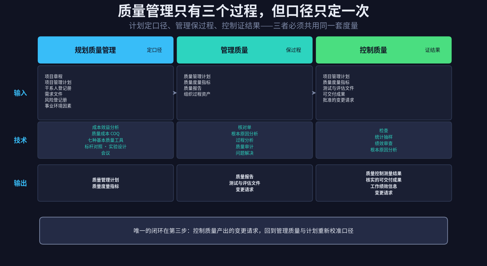
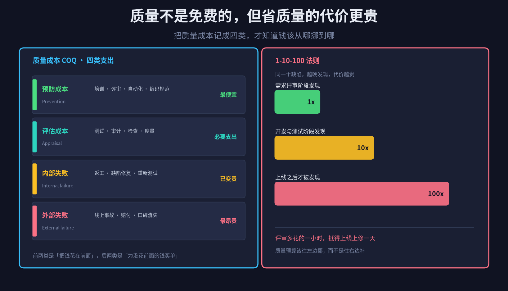
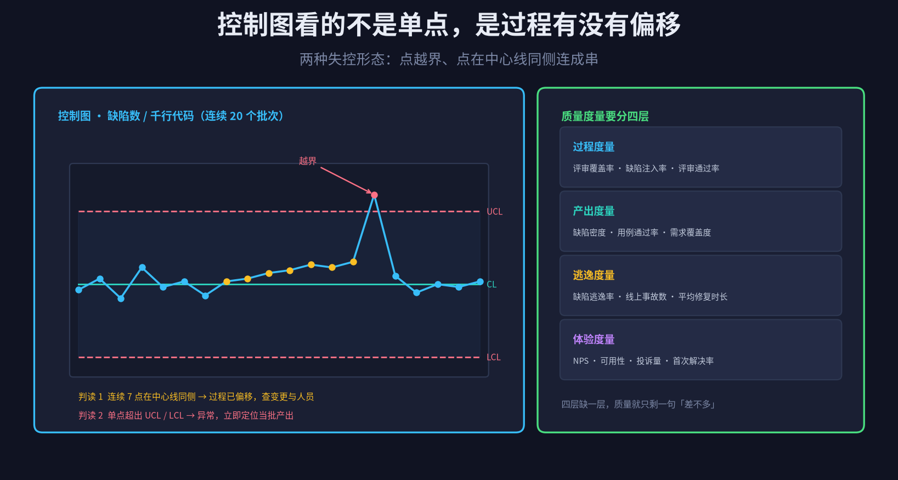
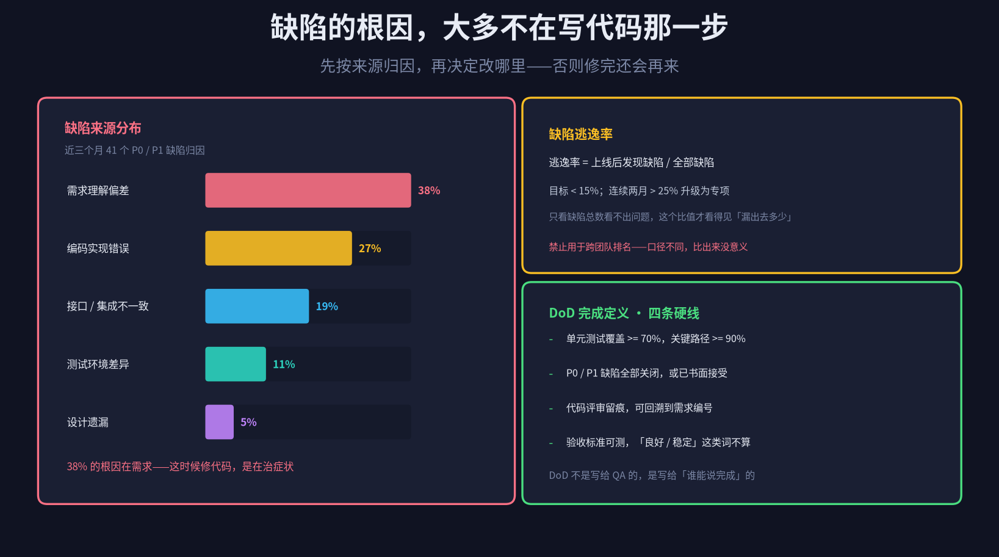
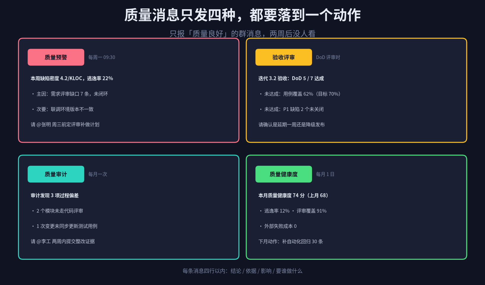

质量管理最容易被简化成一句话：测完了，没大问题。
这句话背后藏着一个很常见的误解——以为质量是「检验出来的」。检验能发现缺陷，但检验不产生质量。质量是在需求、设计、编码这些环节里一点点长出来的，测试只是最后去证明它长成了没有。
一个具体的场景：系统上线两周，客服转来一句「用户反馈支付偶尔失败」。查日志，是一个边界条件没处理。回去翻记录，需求评审做过，设计评审做过，测试也做了，但没有任何一个环节定义过「什么样才算完成」。三个环节都在，却没有一把共同的尺子。
质量不是测出来的，是定义出来的；测试只负责证明你定义得对不对。
这是十大领域系列的第四篇。范围管「做对的事」，进度管「按承诺到」，成本管「花得值不值」，质量管「做出来的东西到底能不能用」。前三个都能靠数字收敛，质量不行——它的难处不在数据，在口径。
结构照旧：三个过程的输入输出、两个重点（口径与控制）、六份文档模板、归档方式、四种群消息、SKILL 目录，最后是边界。
但先说明一点：不要在质量管理里追求「AI 自动判定质量」。什么算好、能接受到什么程度，是业务的决定，不是模型的推断。AI 真正能帮上忙的是另一件事——把口径钉死、把数据对齐、把偏差按时推出来，让「算不算完成」这类争论没有存在的空间。
1
只有三个过程，但口径只定一次
PMBOK 里质量管理只有三个过程，是十大领域中过程最少的。少不代表简单，只是它把复杂度全都压在了「口径」这一件事上。
规划质量管理 定口径。要度量什么、度量到什么粒度、什么算合格、什么情况算失控、多久报一次、超标了找谁。它的输出只有两份：质量管理计划和质量度量指标。
管理质量 保过程。它看的不是产品，是「做产品的方式」——评审有没有真的做、审计有没有查出问题、同类缺陷是不是还在重复出现。输出质量报告、测试与评估文件、变更请求。
控制质量 证结果。对可交付成果做检查、抽样、测量，证明它符合验收标准。输出质量控制测量结果、核实的可交付成果、工作绩效信息、变更请求。
这三个过程里最容易被忽略的一件事是：它们必须共用同一套度量。如果计划里写的是「缺陷密度 ≤ 3 / 千行代码」，控制时却按「用例通过率 ≥ 95%」去验收，两份数据对不上，后面所有分析都是各说各话。

图 1 · 三个过程的 ITTO：口径在第一步定，后两步只是执行与验证
AI 在这里最容易犯的错，是把三个过程当成三个独立任务，各自生成一份看起来很完整的文档。三份文档格式都很漂亮，字段却互不引用，等于什么都没做对。
正确的做法是：让质量度量指标成为唯一的一份活文件，其它文档都引用它的字段名。指标改了版本号，报告和测量结果跟着升级，历史版本保留不删。这样任何时候问「这个数是怎么算的」，都能一路追到定义。
2
质量成本：把钱从补救挪到预防
质量是有成本的，这一点很多团队不愿意承认。承认了才有一个可讨论的问题：这些钱该花在哪一段。
预防成本：培训、评审、自动化、编码规范。花在前面，单价最低，但收益是隐性的，最难立项。
评估成本：测试、审计、检查、度量。必要支出，用来确认预防有没有生效。
内部失败成本：返工、缺陷修复、重新测试。已经变贵了，但至少还在门内。
外部失败成本：线上事故、客户赔付、口碑流失、监管处罚。最贵，而且最不可控——赔多少不由你决定。

图 2 · 四类质量成本，与 1-10-100 的代价放大关系
前两类叫一致性成本，后两类叫非一致性成本。健康的结构是：前两类占大头，后两类持续下降。反过来，如果一家团队的外部失败成本在涨，通常不是测试人手不够，而是前面两类的投入被砍过头了。
「1-10-100」是这个判断的量化版本：同一个缺陷，需求评审阶段发现，代价记作 1；开发测试阶段发现，约 10 倍；上线之后才发现，约 100 倍。倍数因行业而异，但方向从不例外。
AI 在这里的价值不是精确核算，而是把四类数据拼到一张表上。工单系统有返工工时，运维系统有事故次数，财务系统有赔付金额，HR 系统有培训记录——四份数据散在四处，人不会去拼，AI 可以每月拼一次。
有一点要说清楚：COQ 只是决策依据，不是考核指标。一旦变成考核，各团队会开始把返工藏进「需求变更」，数据立刻失真。这类指标只能往上看趋势，不能往下分指标。
3
口径：DoD 与可测验收标准
这是全篇第一个重点。
质量的争论，九成发生在「算不算完成」上。开发说做完了，测试说没做完，产品说不是我想要的。三个人心里的「完成」都不是一个东西，谁都没说错，只是没有共同的判据。
DoD（Definition of Done，完成定义）要做的就是把这个判据写死。它不是一份表单，是一句话：满足这几条，任何人都必须承认它完成了。
DoD 要分三层，不能只有一层
迭代 DoD：一个需求做完的标准。单元测试覆盖、代码评审、静态扫描无新增高危、验收标准逐条可演示。
发布 DoD：一次上线放行的标准。回归用例通过率、P0/P1 清零、灰度观察窗口、回滚方案演练过。
项目 DoD：整体交付的标准。验收测试签字、文档移交、监控告警接入、运维交接完成。
验收标准要可测：把形容词换成数字和条件
这是最容易落地、也最容易被跳过的一步。看几个对照：「系统应稳定」改成「连续压测 30 分钟，P99 延迟低于 500ms，错误率低于 0.1%」；「界面应友好」改成「新用户在不看文档的情况下，3 分钟内完成首次下单」；「要能支撑业务增长」改成「并发 500 时响应时间不超过 1 秒，扩容后线性增长」。
形容词本身没有错，错在它无法被验证。而无法被验证的标准，最后一定会变成「我觉得还差点意思」。
AI 在这里有一件投入产出比极高的事可以做：扫描需求文档和验收标准，把「良好、稳定、快速、友好、完善、流畅、合理」这类词全部标出来，要求每一条补上判定条件。这一步不需要模型理解业务，只需要它当一个不会疲倦的校对员。
实践里有个经验值：一份中等规模的需求文档，第一次扫描通常能标出 15 到 30 处模糊表述。这个数字本身就很有说服力——它说明「质量口径」这件事，之前根本没被当成一件正事来做。
4
控制质量：控制图与四层度量
这是第二个重点。
控制质量不是「把所有东西都测一遍」。全检在软件里几乎不可能，也没必要。真正要做的是两件事：用抽样得到可信的结论，用控制图判断过程有没有失控。
控制图：不是看单点，是看过程
控制图有三条线：中心线 CL（历史均值）、上控制限 UCL、下控制限 LCL。两种典型失控形态——
点越界：单个样本超出 UCL 或 LCL。说明出现了异常事件，要立刻定位那一批产出。
点成串：连续 7 个点落在中心线同一侧。这比单点越界更值得警惕——没有任何一个点看起来异常，但过程已经整体偏移了，通常对应一次人员更替、一次流程变更或一次工具升级。

图 3 · 控制图的两种失控形态，与质量的四层度量
这里有个很常见的混淆要澄清：控制限不是规格限。规格限是客户或合同要求的上限，控制限是这个过程自身正常波动的范围。一个点可以在规格限之内，却超出控制限——那说明过程已经开始漂了，虽然还没坏，但正在往坏的方向走。质量管理的价值恰恰在这个提前量上。
度量要分四层，缺一层就会自欺
过程度量：评审覆盖率、缺陷注入率、评审通过率。看的是「做事的方式对不对」。
产出度量：缺陷密度、用例通过率、需求覆盖度。看的是「做出来的东西怎么样」。
逃逸度量：缺陷逃逸率、线上事故数、平均修复时长。看的是「有多少问题从你手里漏出去了」。
体验度量：NPS、可用性、投诉量、首次解决率。看的是「用户到底觉得行不行」。
只做产出度量最省事，也最容易自我感觉良好——用例都过了，缺陷数也不多，结果一上线用户全跑了。因为用户感受到的不是你的用例，是你漏掉的那 3%。
关于抽样还有一句提醒：抽样结论必须带置信度。抽 50 条用例全过，不等于 500 条全过。AI 生成质量报告时如果只写「通过率 100%」而不写样本量，这份报告就是误导。
5
缺陷归因：根因大多不在写代码那一步
缺陷修完之后，最有价值的动作不是庆祝，是归因。
很多团队的做法是数缺陷、排优先级、修完关单，然后等下个月再来一轮。这样做的结果是同类缺陷反复出现，只是换了个功能模块。原因很简单：修的是症状，没碰根因。

图 4 · 缺陷来源分布，与两个必须钉死的口径
真实项目里，缺陷来源分布往往长这样：需求理解偏差占大头，然后是编码实现错误、接口不一致、环境差异，设计遗漏反而最少。这个分布说明一件事——如果 38% 的缺陷根因在需求，那么加班修代码不会让下个月的缺陷变少。
所以归因要落到「哪一步没拦住」，而不是「谁写错了」。这两者看起来只差一个词，实际差一个团队氛围。归因问的是流程，定责问的是人；问流程能得到改进项，问人只能得到辩解。
AI 在这里能做的事是聚类：把缺陷单的标题、描述、关联需求、修复提交一起读，按根因归类，输出一张分布图，并列出每个类别里出现次数最多的三个具体模式。注意用词——这是辅助判断，不是判决书。归类结果必须由人复核，因为缺陷描述本身就常常是模糊的。
复盘也有个纪律：每月一次，只看前三类，每类最多给一个改进项。一次改十个等于一个都不改，团队记不住，也验证不了效果。
6
六份文档模板与组织过程资产归档
质量管理产出的文档，必须能回答三个问题：口径是什么、证据在哪、谁认过。六份模板就是围绕这三点设计的。
统一 front-matter：让每份文档都可被机器检索
---
doc_id: QM-PAY-2026-004
doc_type: quality_plan
project: payment-v2
version: 1.2.0
status: baselined
baseline_at: 2026-10-28
owner: zhangming
related: [QT-PAY-2026-011, QR-PAY-2026-007]
supersedes: QM-PAY-2026-003
---
doc_type 只有六个取值：quality_plan、quality_metrics、quality_report、test_assessment、qc_result、quality_change。取值固定，Agent 才能按类型批量检索和交叉引用。
质量度量指标：唯一的一份「活文件」
其余五份都是这份文件的快照。它变了，其它文档的版本号必须跟着变。核心字段只有六个：指标名、计算公式、数据来源、目标值、告警阈值、采集频率。
metrics:
- name: defect_escape_rate
formula: 上线后缺陷数 / 全部缺陷数 * 100%
source: [jira, incident_db]
target: "< 15%"
alert: "> 25% 连续两个周期"
cadence: weekly
- name: review_coverage
formula: 已评审需求数 / 需求总数 * 100%
source: [confluence, gerrit]
target: ">= 90%"
alert: "< 80%"
cadence: weekly
质量控制测量结果：每条测量都要带样本量
measurement:
item: 支付回调模块 v2.3
method: 随机抽样
sample_size: 50 / 总量 500
confidence: 95%
result: 通过 49，失败 1（边界条件）
conclusion: 77.4% - 97.8% 区间内合格
evidence: [qc/2026-11/pay-cb-01.log]
verdict: 有条件通过
注意 conclusion 那一行：不写「全部通过」，写的是区间。这是质量管理文档和普通测试报告最大的区别——前者对自己结论的边界是诚实的。
剩下四份各有侧重：质量管理计划定规则；质量报告讲本期发现与趋势；测试与评估文件记录测了什么、怎么测的；质量变更单记录口径或基准的任何改动。
归档：进项目知识库，按组织过程资产规则管理
路径固定为 /kb/{project}/quality/{doc_type}/{doc_id}-v{version}.md，六类文档各一个子目录。
状态只有三个：draft（编写中）、baselined（已基线）、superseded（被替代）。任何文档都不物理删除，被替代的保留并可检索，这样才能回答「三个月前我们为什么那么定」。
跨项目复用是这套归档真正的收益：新项目启动时，Agent 可以按 doc_type 检索历史项目的质量计划和度量定义，直接给出「同类项目通常量这六个指标」的建议，而不是每次从零开始拍脑袋。
7
四种群消息与 SKILL 结构
质量管理的结果要进项目群，但不是把所有数字倒进去。只发四种，每种对应一个明确的动作。

图 5 · 四种质量群消息，四行以内，每行都指向一个动作
质量预警：指标触发阈值时发。一句判断，再给两三行依据，最后点一个人。结尾必须有明确的请求，否则这条消息等于发了个寂寞。
验收评审：DoD 核查时发。要写清哪几条达成、哪几条没达成，并给出两个可选结论（延期 / 降级），让对方选，而不是让对方自己想。
质量审计：发现过程偏差时发。只讲偏差事实和整改要求，不讲评价。审计报告一旦带上态度，被审计方就会开始防御。
质量健康度：每月一次。分数、两个关键指标、下月一个动作。这条消息的作用是让人记住趋势，不是让人被考核。
格式上有个硬约束：四行以内，@ 到具体的人，不 @ 全员。企微群的 markdown 消息体上限是 4096 字节，超了会被截断，所以模板必须短到不会超。@ 全员两次之后，这个群就没人看质量消息了。
SKILL 目录：一个 Skill，六个动作
skills/quality-manager/
SKILL.md
references/
itto.md # 三过程输入技术输出
templates.md # 六份文档模板
metrics.md # 四层度量定义
messages.md # 四类群消息格式
scripts/
collect.py # 拉取 jira / 流水线 / 监控
baseline.py # 基线并写入知识库
notify.py # 企微 / 飞书推送
六个动作分别对应三过程的入口：plan 定口径、measure 采集、check 判定、attribute 归因、archive 归档、notify 推送。整条链路在同一个 Skill 里闭环，不需要人手动串。
8
边界：AI 不该替你做的那几件事
第一，不判定「什么算好」。可接受的质量水平是业务决定，涉及成本、竞争和用户预期。AI 可以给出历史数据和同行业参考，但不能替你拍板。
第二，缺陷归因不等于定责。归因的产出是流程改进项，不是责任人名单。一旦 AI 的归因结果被用来追责，下一轮数据里就会出现大量「无法复现」。
第三，抽样结论必须带置信度和样本量。没有这两个数字的「全部通过」，在质量语境下是无效结论。
第四，别把质量分数做成考核。任何被用来排名和打分的质量指标，都会在三个月内被优化成好看的数字，而不是真实的改善。
第五，外部失败成本要优先防，不是优先算。它最贵，也最不可控。与其花钱把赔付算准，不如把钱花在让那个缺陷根本不出去。
质量是过程属性，不是检验结果。检验只能告诉你它现在多差，改不了它为什么差。
回到开头那个支付失败的例子。如果当初在需求评审时，有人问过一句「并发支付失败后，系统的正确行为是什么，怎么验证」，这个缺陷大概率不会出现。不是测试不努力，是那把尺子从来没被造出来。
所以这套质量管理的设计，重心不在「测得更全」，而在「把口径钉在前面的每一步」。DoD 钉住完成，可测验收标准钉住需求，度量指标钉住判断，控制图钉住过程的稳定性。四颗钉子打下去，后面的监测、归因、归档、推送才有意义。
下一篇接着拆资源管理。它的难点和这一篇正好相反——质量难在口径太软，资源难在数据太硬：人不是可分配的单位，技能、可用度、情绪、成长，没有一项能干净地写进表格里。
系列进度：框架 → 范围 → 进度 → 成本 → 质量（本篇）→ 资源 → 沟通 → 风险 → 采购 → 干系人 → 整合。
Skill Accumulation 提示：这已是本系列第五篇按同一结构产出的推文——ITTO 骨架、重点环节拆解、文档模板、归档规则、群消息格式、SKILL 目录、边界声明。七步流程已经稳定到可以被固化成一个专属 skill，下次只需要输入领域名称和两三个重点环节。